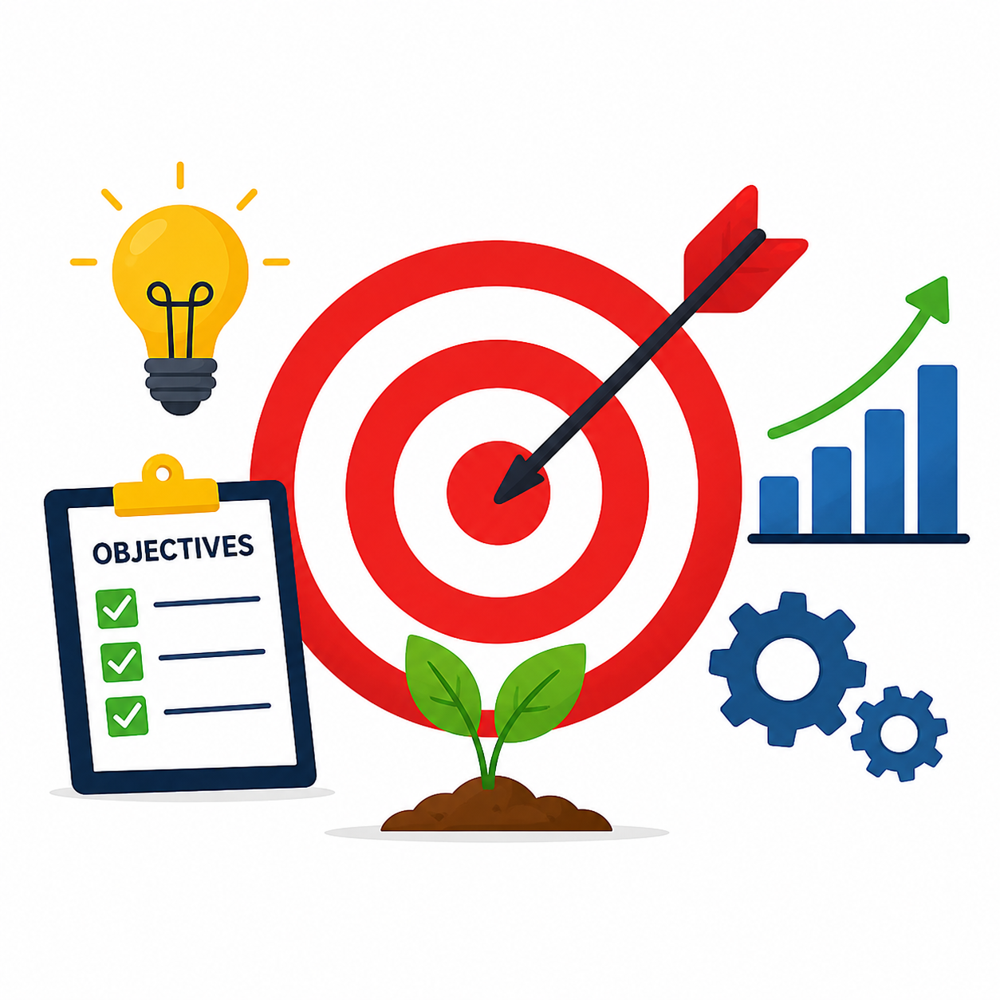
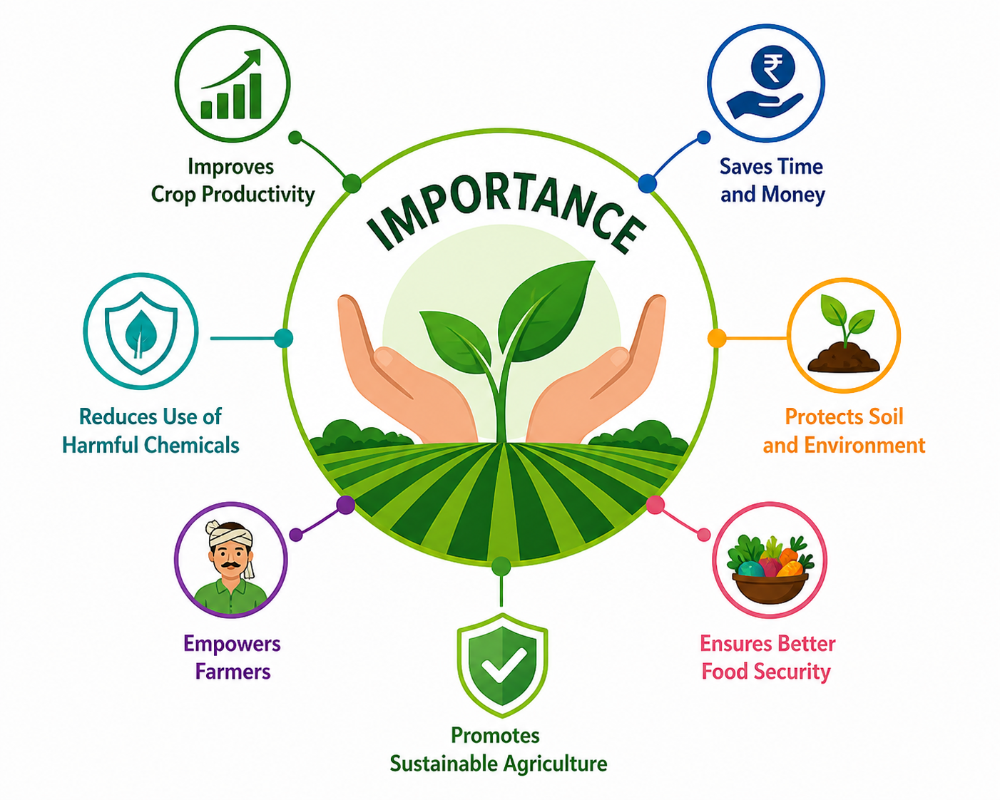
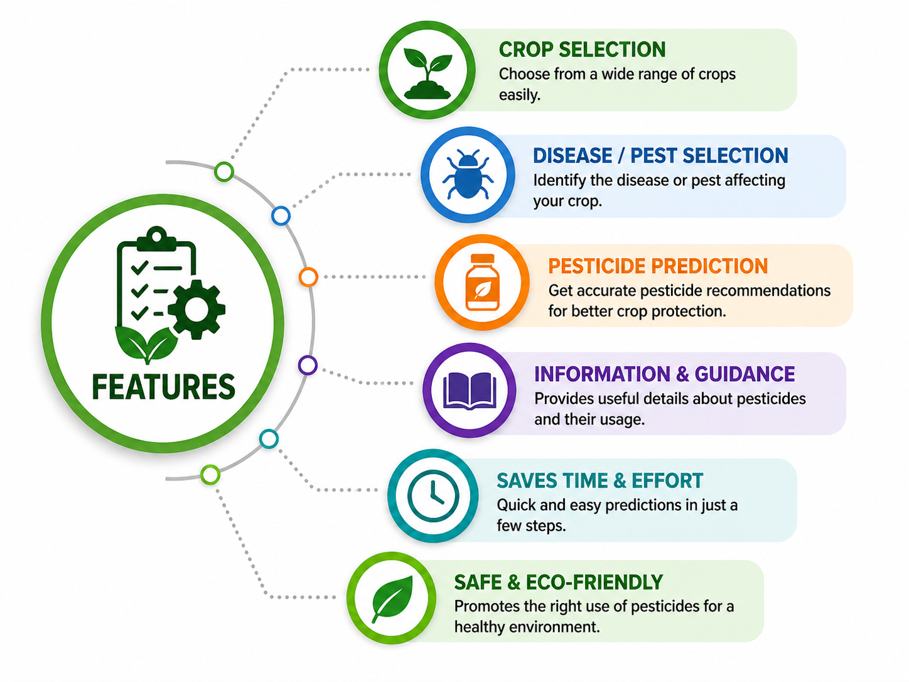
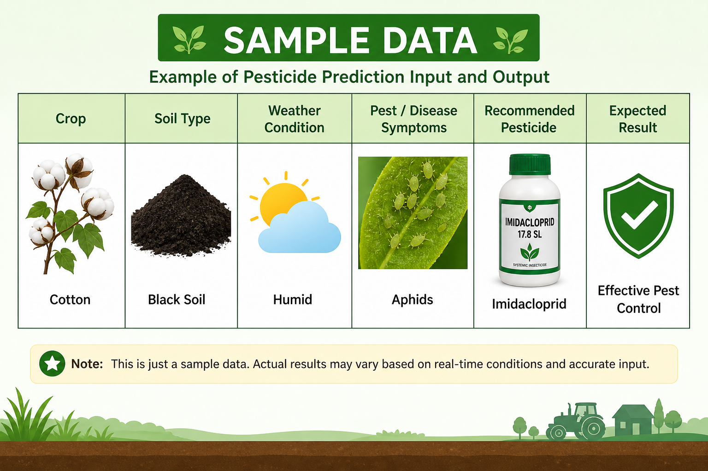
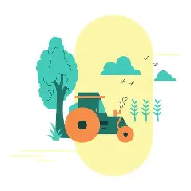

Empowering Farmers with Smart Decisions
Smart Agriculture Pesticide System is an innovative farming solution designed to help farmers predict the best pesticide based on crop type, soil health, weather conditions, and pest symptoms.
Our goal is to improve crop productivity, reduce pesticide misuse, and support modern scientific farming practices.
Project Title : Agri Pesticide Prediction System
Name : Shubham Sharnagate
Name : Prajakta Dharpure
Name : Kaweri Harinkhede
Name : Kalyani Gadhe
Name : Pranali Shende
Name : Sakshi Nagade

The Smart Agri Pesticide Prediction System is a web-based platform that helps farmers select the correct pesticide based on crop, soil, weather and pest symptoms. The goal is to reduce crop loss and support smart farming using simple digital tools.
The website also includes a Login and Register system where users can create an account and securely access the prediction feature. This helps farmers save their details and use the system anytime.

The main objective of this project is to provide an easy-to-use platform that helps farmers make correct decisions regarding pesticide selection. It aims to:

This project helps farmers choose the correct pesticide for crops and diseases. It reduces crop loss, saves time and money, and improves agricultural productivity.

The website works in a simple step-by-step process to help farmers get pesticide recommendations.The working of the system is simple and user-friendly:


Example of system usage:
Crop: Cotton
Disease: Leaf Spot
Suggested Pesticide: Suitable chemical solution for treatment

Although the system is useful, it has some limitations:

This project can be improved in the future by:
Login Here
Register Here
Back to Home